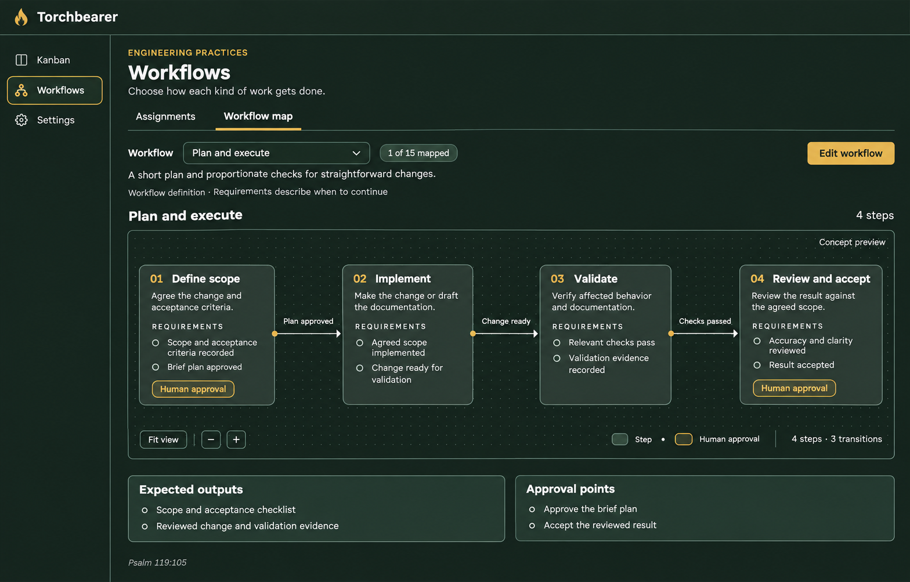
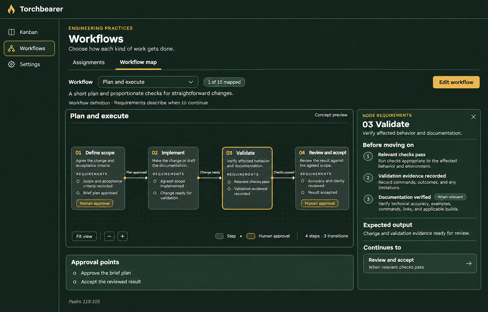
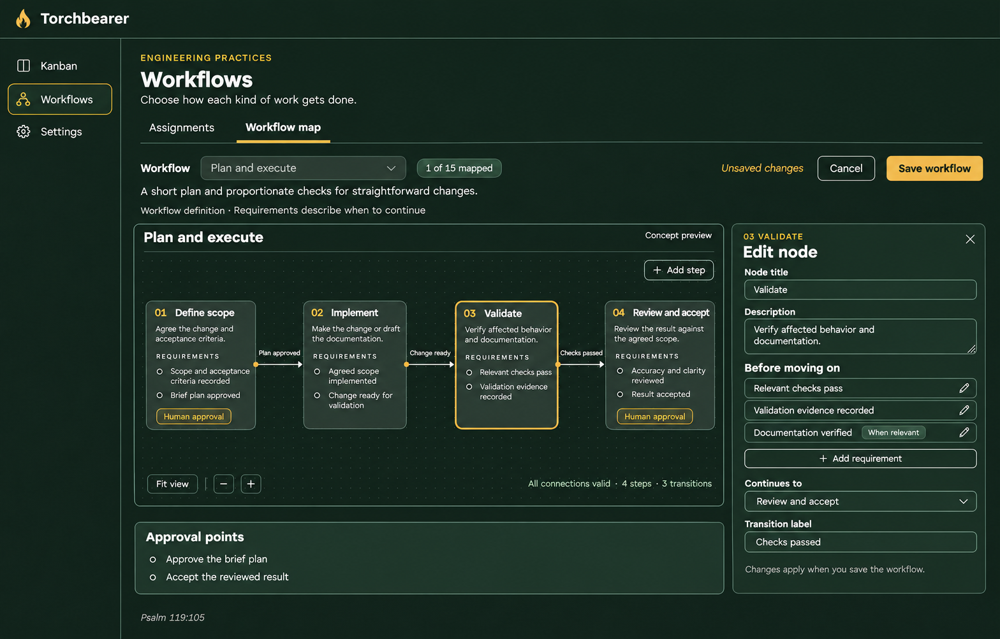

Concept 1: one selected DAG, with requirements on each node and conditions on the arrows.

Concept 2: selecting a node reveals its full requirements, applicable checks, expected output and next step.

Concept 3: edit one DAG in a local draft, then save or cancel the changes.